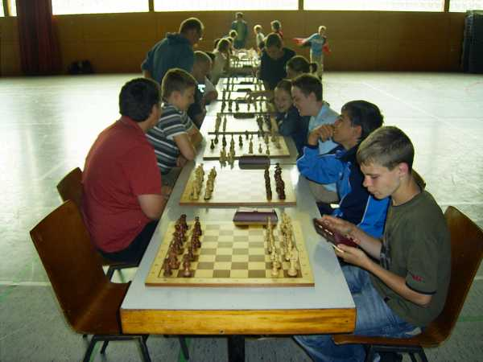
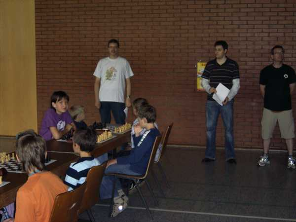

76 Kinder und Jugendliche trafen sich in der Sporthalle in Brombach. Gespielt wurde in den Altersgruppen U8, U10, U12, U14 und U16. Der SC Laufenburg war durch 6 Jugendlichen und einen Gast beim Turnier vertreten.

Beim Aufwärmen

Turnierbeginn

Jochen bei der Arbeit...

Auch Rafael kämpft...

Lukas überlegt...

Daniel will den schnellen Sieg...